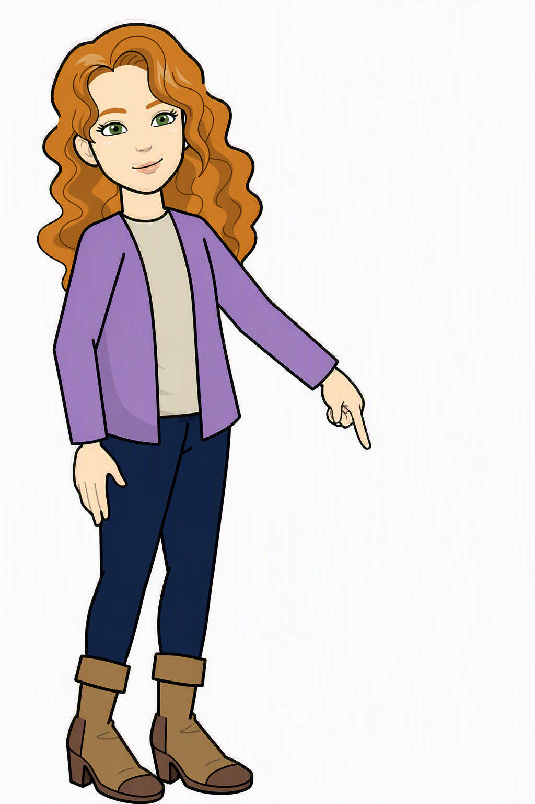

Attaching Documents to Progress
Attaching Documents to Progress

Return to this Browser Tab when you have finished watching the video.
Then answer the question below.
When you are ready, click "Next Page".
Then answer the question below.
When you are ready, click "Next Page".
When you have finished go to CHARMS, and find the progress action you added to Khal Drogon's chronology,
'Success Story to Celebrate'.
Attach a document to this progress action. It must be something that has no personal data included.
If you have nothing suitable, you can find a document in the link below that can be used.
When you have finished, click below to go to the next page.
'Success Story to Celebrate'.
Attach a document to this progress action. It must be something that has no personal data included.
If you have nothing suitable, you can find a document in the link below that can be used.
When you have finished, click below to go to the next page.